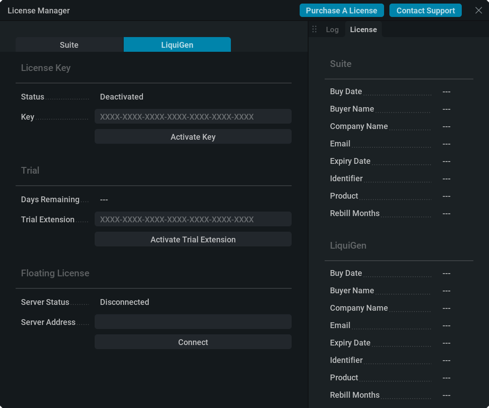
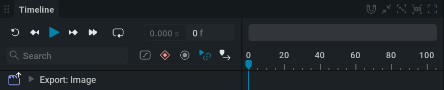
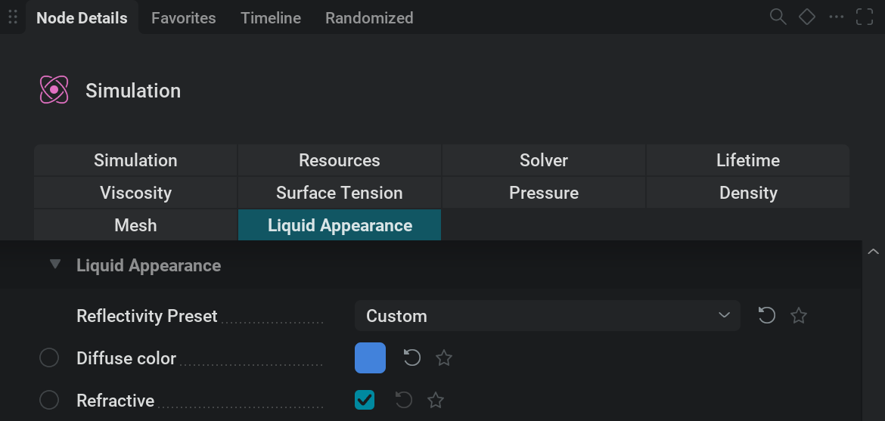
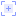

入门#
安装 LiquiGen#
下载#
如果你已经拥有许可证，请前往 https://jangafx.com/software/liquigen/download/
在左侧指定你想要的版本（默认是最新版），然后点击右侧的蓝色下载按钮。
若要获取试用版，请前往 https://jangafx.com/software/liquigen/try

页面会显示一个表单。
电子邮箱地址以及第二个复选框是必填项；该复选框允许我们保存表单中提供的信息。
填写完表单后，在底部选择你的操作系统（Windows 或 Linux），然后点击 Download LiquiGen 按钮。
随后 liquigen-latest.exe 文件会下载到你的硬盘。
安装#
双击 .exe 文件。
接受协议。
点击 Next、Next、Install、Finish
如果你保留 Launch LiquiGen 为勾选状态，软件会立即启动。
如果你取消勾选 Launch LiquiGen，可以通过双击桌面快捷方式启动软件。
如果你同时取消勾选 Create a desktop shortcut，可以双击 LiquiGen.exe 文件来启动 LiquiGen；该文件位于 LiquiGen 文件夹中，该文件夹通常位于 C:/Program Files/JangaFX
许可#
{kind=link}

安装完成后，运行 LiquiGen，然后在 Help 菜单中点击 License Manager… 来打开它。
在许可证管理器中，将你的许可证密钥输入到 “Key” 文本框。
然后按下 Activate Key 按钮。如果许可证成功激活，状态文字会从 Deactivated 变为 Activated。
如果出现任何错误，它们会以黄色显示在右侧。如果你的密钥无法激活，请通过电子邮件联系我们： support@jangafx.com，并使用右上角蓝色的 Contact Support 按钮，同时附上错误截图。
如果你没有许可证密钥，可以在我们的 官网价格页面上购买。你也可以使用蓝色的 “Purchase A License（购买许可证）” 按钮前往该页面。
使用 LiquiGen#
欢迎使用 LiquiGen！
在本节中，你将学习软件的基础知识，开始为游戏或影视制作出色的液体模拟。
项目管理器#

首次打开软件时，你会看到项目管理器。你随时可以点击
 这个左上角的 Home 图标进入或离开该界面。
这个左上角的 Home 图标进入或离开该界面。在项目管理器中，你可以通过选择左侧的分类，快速访问预设或自己的项目文件。
预设是随 LiquiGen 一起提供的只读 .liquigen项目文件。
它们既可以作为你要创建的模拟的良好起点，也可以作为学习参考。
不使用预设时，请确保从正确的比例模板开始，这样才能以最佳且最简单的方式获得想要的结果。
预设存放在 LiquiGen 安装文件夹内的 presets 文件夹中。（通常为 C:/Program Files/JangaFX/liquigen)
请注意，预设与其他 .liquigen 文件没有区别。
如果找不到要使用的项目，可以点击 Open Project 按钮，通过文件浏览器手动查找你的 .liquigen 文件。
New Project 会加载默认预设。和任何预设一样，其中的所有内容都可以修改，所以即使它看起来不像你的目标效果也不用担心。
你可以使用 Ctrl+S 保存预设，或前往 File > Save
用户界面#
我们来看一下主用户界面。
如你所见，它分为四个区域：视口、时间轴编辑器、节点编辑器和属性面板。
这些区域都可以按你的偏好缩放：按住
 并拖动区域边缘即可调整大小；也可以点击每个区域右上角的切换面板全屏按钮
并拖动区域边缘即可调整大小；也可以点击每个区域右上角的切换面板全屏按钮  以全屏查看。
以全屏查看。
视口#

这里用于查看模拟、形状、力场以及场景中的其他内容。
你可以在视口中按住  ，并配合按下 Alt 进行平移， Ctrl 进行缩放， Shift 进行倾斜。
，并配合按下 Alt 进行平移， Ctrl 进行缩放， Shift 进行倾斜。
如果你习惯其他控制方案，可以在顶部菜单栏前往 Settings>Preferences，然后在 Camera 部分中按你的偏好修改 Control Mapping。
在视口顶部，你会看到几个选项卡和下拉菜单：
Scene 是默认选项卡，可用于查看和操作所有内容。
Render 选项卡用于预览将要导出的内容。
Export 选项卡用于查看已导出的图像。
在 Export 选项卡旁边有一个下拉菜单，可选择要从中观察的
 摄像机。
摄像机。使用
 View 下拉菜单可以查看可在视口中显示或隐藏的内容。
View 下拉菜单可以查看可在视口中显示或隐藏的内容。如果视口中缺少某些内容，或某些显示项让你分心，首先应检查这里。
时间轴编辑器#
{kind=link}

这里从左到右可视化时间。
你可以播放或暂停模拟，使用
 或 spacebar
或 spacebar你可以重置模拟（回到时间轴开头），使用
 或 r
或 r
如果忘记某个快捷键，可以将鼠标悬停在按钮上查看它的快捷键。也可以前往 Shortcuts 部分，位于 Settings>Preferences。
从开头播放时，你会看到一条蓝线移动。它表示时间轴上的当前时间。
按钮旁边的数字会以帧和秒显示当前时间。点击左侧的数值时，时间轴会在显示帧数和显示秒数之间切换。
请注意，模拟总是从一帧计算到下一帧。这意味着你不能倒放，也不能像普通视频那样拖动浏览。
节点图#

这里用于管理创建模拟所需的构建模块。
你看到的独立模块称为节点。可以把它们想象成各自承担特定任务的小机器；这些机器组合在一起，就构成了产出最终效果的工厂。
节点通过连线连接，数据会从一个节点传递到另一个节点。
若要在节点图中导航，请按住  按钮并拖动。你也可以使用滚轮放大或缩小。
按钮并拖动。你也可以使用滚轮放大或缩小。
如果迷失了位置，可以使用右上角的  按钮重新居中节点，并使用
按钮重新居中节点，并使用  按钮重置缩放。
按钮重置缩放。
选择节点：
按住
并在节点周围拖出一个框，可以框选节点。选中节点后按 Delete 键。
复制和粘贴节点： Ctrl + C 和 Ctrl + V.
按住 鼠标左键 并拖动即可移动节点。
使用节点右上角的开关按钮禁用节点：
 。
。连接节点时，可以
从节点两侧的连接引脚点击并拖拽。也可以选中多个节点后按 Ctrl + L连接引脚始终会标明它需要连接到哪一个节点或节点类别。
你可以在节点图中右键单击并从菜单中选择节点来创建节点。也可以从连接引脚拖到节点图中的空白位置；这样会弹出一个菜单，列出适用于该连接类型的所有节点。
属性面板#
{kind=link}

这里显示所选节点的设置。（如果选中的是同类型的多个节点，则显示这些节点的设置。）
Node Details（节点详情）： 这个选项卡显示所选节点的所有参数。
每个节点都有自己的一组选项卡，用来组织参数。
查找特定参数时，可以使用 Parameter Palette 快速找到它；按 Ctrl + P
修改参数时，可以使用
点击数值，输入新值后按 Enter ；也可以点击并拖动数值滑块。
你也可以在这些文本框中直接进行数学运算。例如输入 4*7/2+6-2 并按 Enter 会把该参数设为 18。例如，这有助于快速将数值相乘或减半。
有些参数不是数值，而是下拉菜单；可以用
点击打开，然后从菜单中选择一个选项。此外还有复选框，可以直接点击开启或关闭。
试着把光标停留在参数名称上。这样会显示一个文本框，说明该参数的作用。
参数右侧的还原图标
 会将参数重置为默认值。
会将参数重置为默认值。Favorites： 这个选项卡显示所有标记为收藏的参数。你可以在 Node Details（节点详情）选项卡中勾选任意参数旁边的星形图标
 来将其加入收藏。
来将其加入收藏。Timeline： 这个选项卡显示所有启用了关键帧的参数。若要了解关键帧，请查看我们的 关键帧动画 页面。
Randomized： 在这个选项卡中，你可以查看并调整被选中用于随机化的参数。这可用于创建模拟的不同变体。若要选择一个参数用于随机化，请 Shift +
点击左侧的  图标。已随机化的参数会用 图标标记。更多信息请查看我们的 随机化 部分。
图标。已随机化的参数会用 图标标记。更多信息请查看我们的 随机化 部分。
{kind=link}
模拟#
模拟时首先要注意，应使用真实的比例。你可以查看地面平面上标出的尺寸来判断物体尺度。若想效果正确，不要模拟一头 10 cm 长的鲸鱼或一个 100 m 高的桶。要获得良好的起点，可以在 Project Manager 中选择比例模板！
在 LiquiGen 中，液体使用“混合求解器”进行模拟，也就是使用粒子和体素来计算模拟结果。
粒子是 3D 空间中的点；体素则像三维像素一样，把 3D 空间划分成网格。
液体由粒子构成，这些粒子会经过一个称为“网格化”的过程生成液体网格，然后液体网格通过液体着色器进行渲染，默认看起来像水。
在  Simulation 节点中，液体外观由 Mesh 选项卡中的网格化设置，以及 Liquid Appearance 选项卡中的着色器设置决定。
Simulation 节点中，液体外观由 Mesh 选项卡中的网格化设置，以及 Liquid Appearance 选项卡中的着色器设置决定。
若要查看粒子而不是液体网格，请打开 Diagnostics 面板：点击  图标（位于视口右上角），取消勾选
图标（位于视口右上角），取消勾选  Liquid Mesh，并勾选
Liquid Mesh，并勾选  Liquid Particles。
Liquid Particles。
粒子定义了液体：粒子移动，液体也会随之移动。粒子穿过的体素会计算并存储速度、压力、散度和力场，从而告诉粒子该往哪里移动。粒子就像棋盘上的棋子，可以位于棋盘上的任何位置，但会在具体格子内获得明确的移动指令。
LiquiGen 是稀疏求解器。体素数量不是固定的；体素和粒子会根据液体所在位置创建和销毁。这意味着求解器不会在没有液体需要模拟的区域浪费计算资源。不过在内存方面，求解器需要知道最多可以使用多少粒子和体素，这个上限在  Simulation 节点的 Resources 选项卡中定义。
Simulation 节点的 Resources 选项卡中定义。
体素大小位于  Simulation 节点的 Simulation 选项卡中，它决定模拟中可能呈现的最小细节尺寸，因此会直接影响模拟的真实感和细节层次。它也会直接影响模拟速度，因为更多体素和粒子需要更长时间计算。
Simulation 节点的 Simulation 选项卡中，它决定模拟中可能呈现的最小细节尺寸，因此会直接影响模拟的真实感和细节层次。它也会直接影响模拟速度，因为更多体素和粒子需要更长时间计算。
变换#
大多数对象/节点都可以在场景中移动，方法是使用位置、旋转或缩放参数，或使用操控器。
选中可移动节点时，视口中会弹出一个操控器。
操控器有三种：平移、旋转和缩放。
可以使用快捷键 Q、W 和 E 来选择它们，也可以使用视口左上角的操控器切换器。（如果看不到操控器切换器，请确认它已在  View 下拉菜单中勾选。）
View 下拉菜单中勾选。）
若要控制操控器手柄，请按住  并拖动。
并拖动。
节点#
我们来看一下最重要的一些节点分别负责什么。
 Shapes（形状）#
Shapes（形状）#
形状可以连接到不同类型的节点，并承担各种用途，例如作为发射源、碰撞对象、排水对象，或作为力场遮罩。
在  Shape: Primitive 节点的 Type 下拉菜单中提供了许多基础形状选项。
Shape: Primitive 节点的 Type 下拉菜单中提供了许多基础形状选项。
如果想把自定义 3D 模型用作形状，可以使用  Import 节点。
Import 节点。
 Emitter（发射器）#
Emitter（发射器）#
在 Emitter 节点中生成液体粒子。
粒子数量会受到几个因素叠加影响：
连接到发射器的形状： 这定义了粒子可以生成的位置。更大的形状会发射更多液体粒子。
发射器设置： 例如，可以尝试调整 Volume flow rate（体积流量）参数（位于 Behavior 选项卡）。更高的值会产生更强的液体流动，因为它会生成更多粒子。
体素大小： 粒子密度由体素大小推导而来。体素越小，发射形状中能容纳的体素越多，粒子也越多。

 Collider（碰撞体）#
Collider（碰撞体）#
这会让液体与连接到该节点的形状发生碰撞。
例如，如果想让水浇到一个球体上，  球体形状需要连接到 Collider 节点，而该节点需要连接到
球体形状需要连接到 Collider 节点，而该节点需要连接到  Simulation 节点。
Simulation 节点。
 Force（力）#
Force（力）#
这是一类会改变液体运动的节点。例如，  Force: Turbulence 节点会向模拟添加大量随机速度，让液体看起来更加湍动。
Force: Turbulence 节点会向模拟添加大量随机速度，让液体看起来更加湍动。
Force 节点需要连接到  Simulation 节点才能影响模拟。
Simulation 节点才能影响模拟。
如果希望力只作用于特定区域，可以将一个形状连接到力节点左侧的 Mask Shapes 输入引脚，用它来遮罩该力的影响。
默认预设使用  Force: Constant 节点作为把液体向下拉的重力。试着修改它的参数或关闭它，观察效果。
Force: Constant 节点作为把液体向下拉的重力。试着修改它的参数或关闭它，观察效果。
 Drain（排水）#
Drain（排水）#
该节点会移除连接到节点的形状范围内的所有液体粒子。
这有助于通过移除不必要的液体粒子来节省资源，例如那些不会被你计划使用的 3D 摄像机看到的粒子。
另一个用途当然就是作为排水口。
 Simulation（模拟）#
Simulation（模拟）#
这里包含大多数全局设置。例如，你可以在 Simulation 选项卡中修改液体的物理属性，并在 Liquid Appearance 选项卡中调整着色，以模拟蜂蜜、黏液或牛奶等其他液体。
一个图中只能有一个 Simulation（模拟）节点。
可以将多个 Emitter（发射器）、Force（力）、Drain（排液）和 Collider（碰撞体）连接到该节点左侧的引脚。
 Light（灯光）#
Light（灯光）#
顾名思义，这是一类用于照亮场景的节点。
可以尝试调整强度参数，看看它们的作用。
Light 节点需要连接到 Lights 输入引脚，位置在  Scene 节点上。
Scene 节点上。
 Point 类似灯泡，会从空间中的一个可调点发出光。
Point 类似灯泡，会从空间中的一个可调点发出光。 Directional 会从一个角度发出平行光线（类似太阳）。如果要把这盏灯用作太阳光，应将它连接到 Sun 输入引脚，位置在
Directional 会从一个角度发出平行光线（类似太阳）。如果要把这盏灯用作太阳光，应将它连接到 Sun 输入引脚，位置在  Skybox 节点上。
Skybox 节点上。 Area 类似灯光面板，会从空间中的一个可调平面发出光。
Area 类似灯光面板，会从空间中的一个可调平面发出光。
Skybox（天空盒）#
它控制场景中的天空类型。这里有几个选项：
None 会关闭天空，得到黑色背景。
Atmosphere 是最高级的选项，用于模拟真实天空。已连接的太阳（Directional）灯光角度会影响天空颜色。
HDRI 允许你导入 HDRI 贴图来照亮场景。
 Ground（地面）#
Ground（地面）#
这里包含与场景中可见地面平面相关的所有设置。
默认情况下，它设置为 Units，方便你查看当前工作的尺度类型。
请注意，即使该节点已关闭，液体仍然始终会与地面碰撞。
 Scene（场景）#
Scene（场景）#
这个节点是 3D 场景中所有元素连接到的枢纽。

Render（渲染）#
{kind=link}
渲染是指把场景中的 3D 元素转换成屏幕上的图像。
此节点包含该过程的相关设置。
LiquiGen 有两种渲染模式：Rasterizer（光栅化器）和 Path Tracer（路径追踪器）：
Rasterizer（光栅化器）： 一种图形简化的实时渲染方法。默认使用此方法。
Path Tracer（路径追踪器）： 一种更基于物理的渲染方法，通过模拟光线来得到更真实的结果。此方法渲染时间更长，通常只会在你对模拟满意并希望从 LiquiGen 导出真实感图像时启用。
可以通过选择 Path Tracing（位于  View 下拉菜单，Viewport（视口）中）来开启或关闭 Path Tracer（路径追踪器）。也可以按 Ctrl + T
View 下拉菜单，Viewport（视口）中）来开启或关闭 Path Tracer（路径追踪器）。也可以按 Ctrl + T
关闭 Path Tracer（路径追踪器）就等同于开启 Rasterizer（光栅化器）。
 Export: Image（导出图像）#
Export: Image（导出图像）#
该节点可将场景导出为图像文件，并包含所有相关导出设置，例如导出模拟的哪一部分、导出哪些渲染通道、使用哪种渲染模式，以及如何渲染形状。
你可以将场景导出为 Flipbook 或 Sequence:
Flipbook 是游戏中常用的格式，会把所有帧放入一张图像纹理，从而获得更好的性能。
Sequence 可导出一系列图像文件，适合用于 VFX 或制作视频。
导出时，需要使用 Directory 参数（位于 Export 选项卡）指定图像文件在电脑上的保存位置，然后点击蓝色的 Export Now 按钮。
你可以创建多个导出节点，并通过选中它们再选择 Export Selected（位于节点图右键菜单）来同时执行多个导出。
 Camera（摄像机）#
Camera（摄像机）#
这是渲染场景时所使用的观察视角。
你可以在视口顶部的  摄像机下拉菜单中选择摄像机来使用它；也可以选择 Camera 节点，并点击 Activate 按钮（位于 General 选项卡）。
摄像机下拉菜单中选择摄像机来使用它；也可以选择 Camera 节点，并点击 Activate 按钮（位于 General 选项卡）。
在 Transform 选项卡中，你可以指定摄像机的位置和旋转。你也可以在通过摄像机观察时，通过在视口中导航来完成这些设置。
当你满意摄像机位置后，可以锁定摄像机，该选项位于 General 选项卡中，这样就不会意外移动它。
其中 Display Resolution 参数位于 Display 选项卡，用于指定摄像机宽高比。你可以在视口中直观看到它。别忘了将它设置为与  Export: Image 节点相同的宽高比，以获得正确结果。
Export: Image 节点相同的宽高比，以获得正确结果。
其中 Field Of View 参数位于 Display 选项卡，用于指定摄像机可见物体的角度。调整它类似于使用长焦镜头进行缩放。
在 Camera 选项卡中选择的摄像机（位于
 Export: Mesh（导出网格）#
Export: Mesh（导出网格）#
使用该节点，可以将液体网格导出为 3D 文件格式，以便在 Maya 或 Blender 等其他软件中使用。
该
继续学习#
现在你应该已经对如何使用 LiquiGen 有了基本了解。
如果你想了解关于 节点, 用户界面, 设置或具体操作方法的更多信息，请查看我们的 参考 页面。

如果你是新手，Project Manager 中的 Learn 选项卡以及我们的 YouTube 频道 都是值得查看的地方。
你也可以打开 LiquiGen 随附的预设，查看它们是如何设置的，从中学到很多内容。
另一种很好的学习方式就是直接尝试所有功能。由于 LiquiGen 的模拟速度很快，通常只要修改某个参数的值，就很容易看出它的作用。
别忘了，你可以把光标停留在任意参数名称上，以查看该参数作用的说明。
如果你想展示作品或寻求帮助，欢迎加入我们的 Discord 服务器
祝你顺利学习 LiquiGen，
我们已经等不及想看到你做出充满水花的精彩效果了！